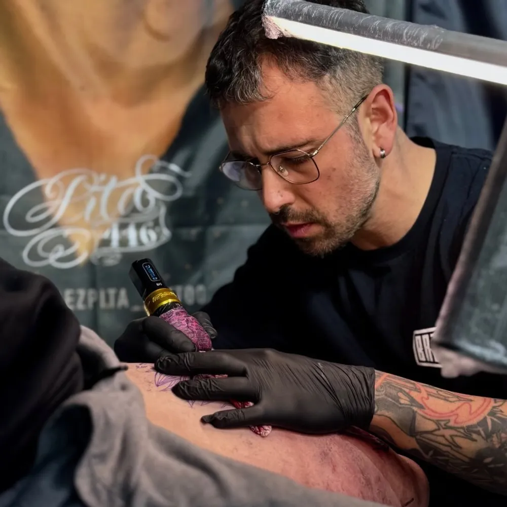

Estarreja | AveiroDavidPita
Tatuador há +10 anos. Marca a tua tatuagem aqui em baixo.
- +10 anos a tatuar
- Realismo
- New School
- Fine Line
- Ligar916 663 543
- Instagram@davidlopezpita_tattoo
- FacebookDavid Pita Tattoo
- Como chegarEstarreja | Aveiro
Já sabes o que queres?
Escolhe o que já sabes e abre o WhatsApp com a mensagem pronta. Não é um formulário: não guardamos nada.
A tua mensagem
Enviar por WhatsApp
Trabalhos
Desliza para o lado. Toca numa foto para a ver maior.
Fotos de banco, só para exemplo · aqui entram os trabalhos do David
Onde estou
Estarreja | Aveiro
Morada exata: a confirmar com o cliente